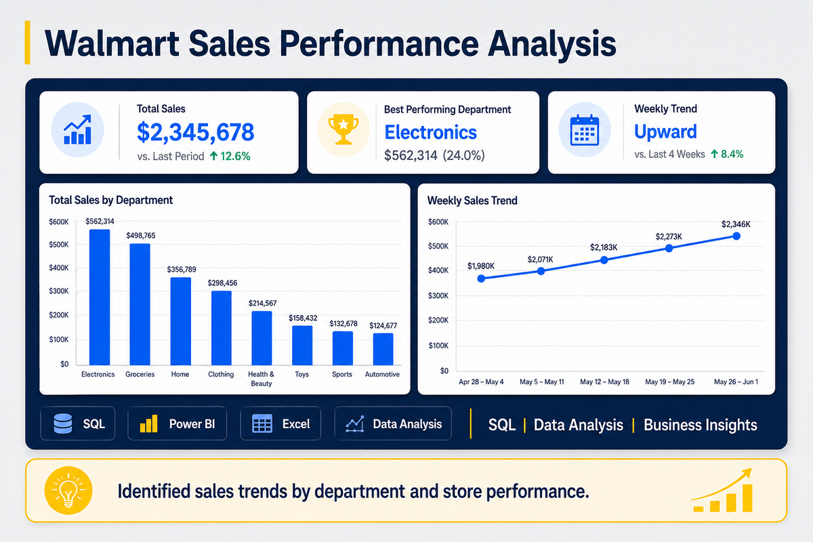
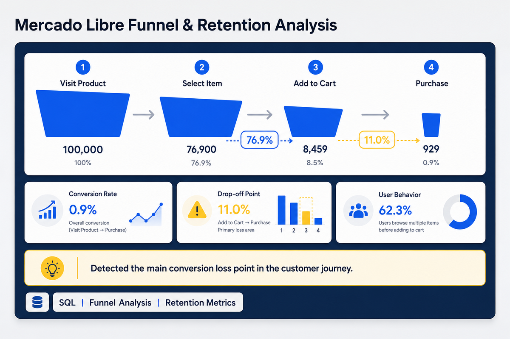
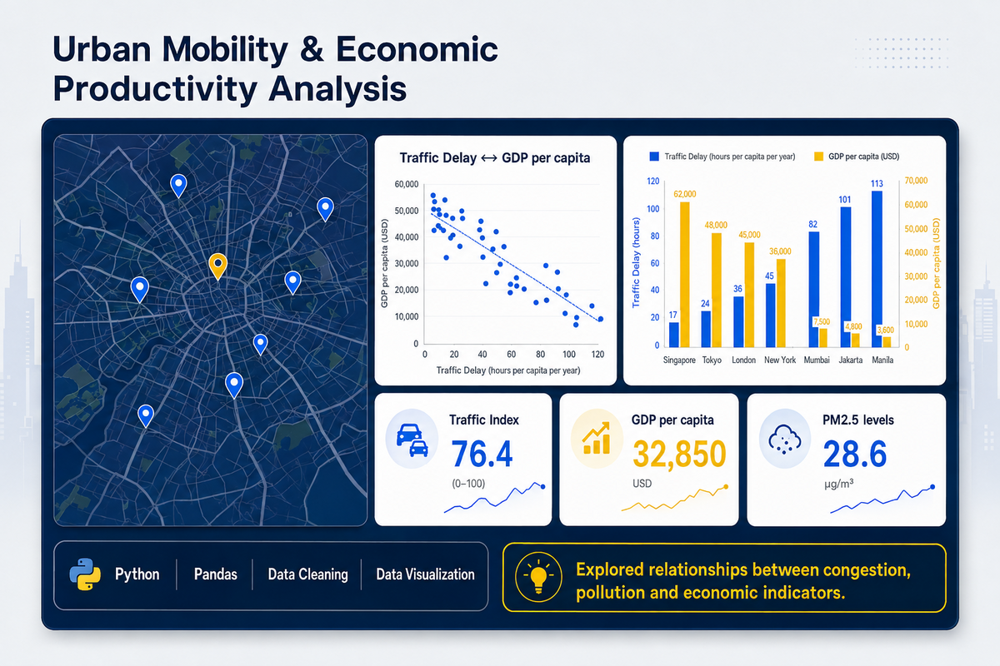
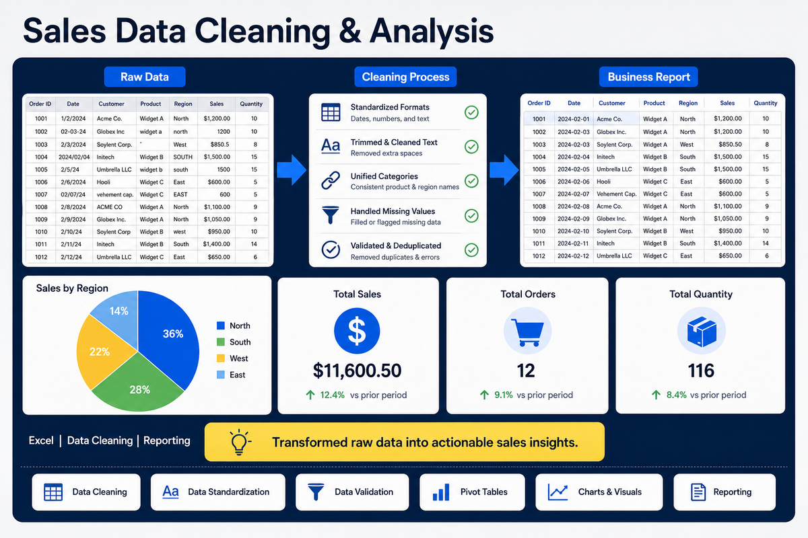
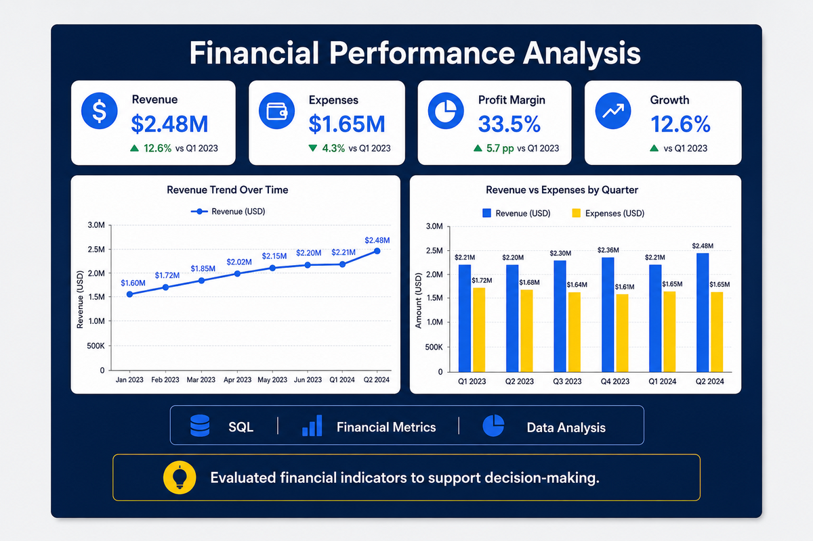

SQL y bases de datos
Consultas, filtros, agregaciones, CTE, CASE WHEN, JOIN y creación de métricas.
Data Analyst Jr.
Analizo datos para transformar información en decisiones estratégicas. Me especializo en Python, SQL, Excel y Power BI, desarrollando proyectos enfocados en limpieza, análisis y visualización de datos.
Actualmente me estoy formando como Data Analyst, desarrollando proyectos con Python, SQL, Excel y Power BI para resolver problemas reales mediante el análisis de datos. Disfruto limpiar, transformar y visualizar información para convertir datos en decisiones que generen valor para las organizaciones.
Herramientas y conocimientos que utilizo para limpiar, transformar, analizar y comunicar información.
Consultas, filtros, agregaciones, CTE, CASE WHEN, JOIN y creación de métricas.
Limpieza, transformación, exploración y análisis de datos mediante Python.
Creación de gráficas y dashboards para comunicar hallazgos de manera clara.
Limpieza, estandarización, análisis comercial y preparación de reportes.
Mi formación combina conocimientos económicos con herramientas técnicas para el análisis y la interpretación de datos.
Mayo 2026 – Noviembre 2026
Formación práctica en SQL, Python, Pandas, análisis exploratorio, limpieza de datos, visualización, métricas de negocio, embudos de conversión y análisis de retención.
2011 – 2016
Formación en análisis económico, estadística, interpretación de indicadores y evaluación de información para comprender problemas económicos y empresariales.
Proyectos de análisis de datos enfocados en limpieza, transformación, visualización y generación de insights utilizando SQL, Python, Excel y herramientas de Business Intelligence.

Analicé más de 95,000 registros para evaluar el desempeño de ventas por tienda y departamento, identificando las categorías con mayor participación y ventas por metro cuadrado.

Construí un embudo de conversión y un análisis de retención para detectar el principal punto de abandono dentro del recorrido de compra de los usuarios.

Integré datos de tráfico, economía y contaminación para analizar la relación entre congestión vehicular, PIB per cápita y calidad del aire en diferentes ciudades.

Limpié y estandaricé datos comerciales, corregí formatos, eliminé duplicados y preparé un reporte para comparar el comportamiento de ventas entre México y Colombia.

Evalué ingresos, costos, margen de beneficio y ROI por país para comparar el desempeño financiero y generar información útil para la toma de decisiones.
Estoy interesada en oportunidades como Data Analyst Jr. Si deseas conocer más sobre mi trabajo, puedes contactarme mediante cualquiera de los siguientes medios.